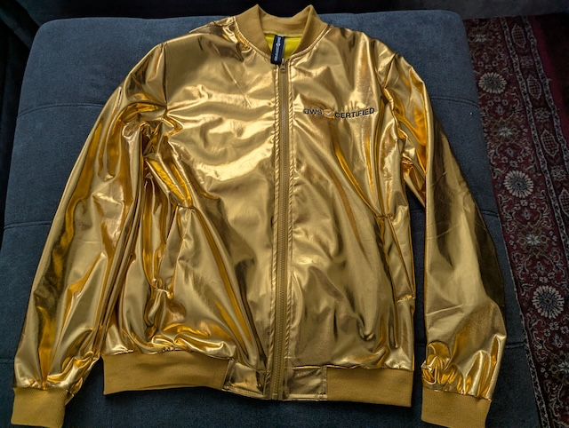
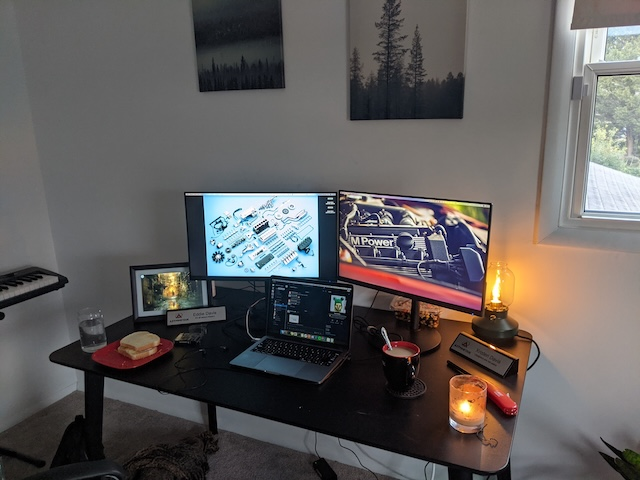
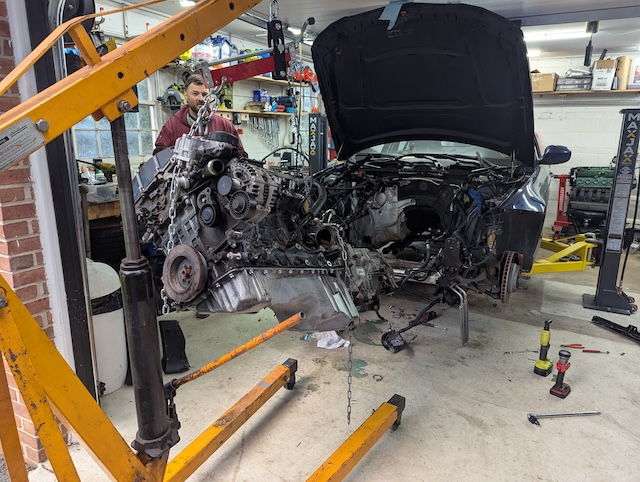
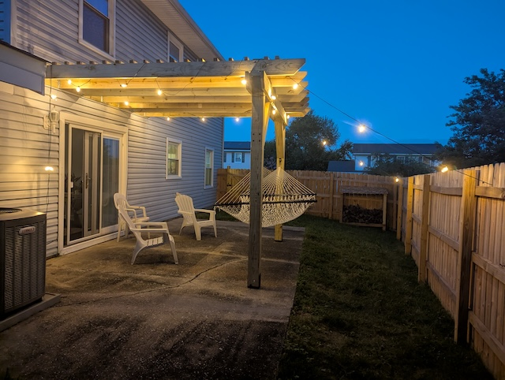

My Skills

Cloud & AWS Architecture
- Designing scalable, highly available architectures on AWS (VPC, EC2, RDS, S3, Lambda, API Gateway).
- Planning and executing cloud migration projects from on-prem or other clouds into AWS.
- Modernizing legacy systems into microservices or serverless-first designs.
- Implementing monitoring, logging, and cost-optimization strategies (CloudWatch, CloudTrail, budgets, tagging).
- Infrastructure as Code with tools like AWS CloudFormation / Terraform and CI/CD pipelines.

Software & Technical Skills
- Programming in languages such as JavaScript/TypeScript and Python for backend and tooling.
- Building RESTful APIs and backend services, integrating with AWS services and third-party systems.
- Working with relational and NoSQL databases, including schema design and performance tuning.
- Building complete CI/CD systems to run database migrations, handle deployements, rollbacks, etc...
- Version control and collaboration using Git and GitHub.

Automotive & Mechanical Skills
- Diagnosing and troubleshooting common automotive issues using both tools and research.
- Performing routine maintenance: oil changes, brakes, filters, fluids, and fixing leaks.
- Working on light modifications and upgrades such as suspension components, adjusting handling, and cooling systems.
- Blown up several engines on track, including the one in the picture.
- Installed several car lifts to accomadate this.

Handyman & DIY Skills
- Tackling home improvement projects: shelving, building furniture, and floor replacement.
- Light electrical and plumbing tasks within safe, residential limits (fixtures, faucets, etc.).
- Drywall patching, painting, and general interior touch-ups.
- Built multiple outdoor buildings and other fixtures.
- Two friends and I built that purgola in under 2 days